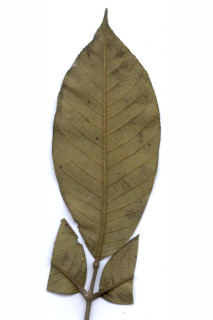
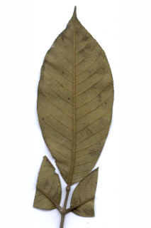
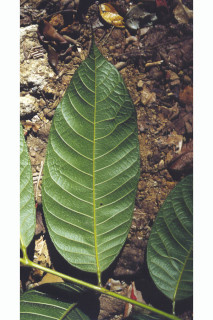
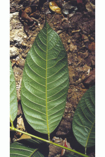

| Leaves : | Leaves compound , imparipinnate , alternate , spiral , clustered at twig ends, to 40 cm; rachis ferruginous pubescent ; leaflets 3-9 pair with odd one at apex , increasing in size towards apex ; petiolule 0.3-0.7 cm long; lamina 5-15 x 2.5-7 cm usually oblong , sometimes ovate , apex acuminate , base asymmetric-rounded ; margin serrate or serrulate , coriaceous , rusty tomentose or pubescent beneath, glabrous above; secondary_nerves strong, 11-18 pairs; tertiary_nerves weakly percurrent . |


 

 
